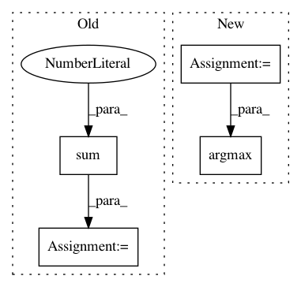

becc945240a424bc08f74476c46f6a50b69928a5,src/skmultiflow/meta/additive_expert_ensemble.py,AdditiveExpertEnsemble,fit_single_sample,#AdditiveExpertEnsemble#Any#Any#Any#Any#,60
Before Change
predictions_probs = self.get_expert_predictions_probs([x])
//// 2. Output prediction:
output_pred = np.argmax(np.sum(
[pred_probs * w for pred_probs, w in zip(predictions_probs, (exp.weight for exp in self.experts))],
axis=0
))
//// 3. Update expert weights:
self.update_expert_weights(map(np.argmax, predictions_probs), y)
After Change
(As was originally described by [1])
//// 1. Get expert predictions:
predictions = self.get_expert_predictions(X)
//// 2. Get aggregate prediction:
output_pred = np.argmax(self._aggregate_expert_predictions(predictions))
//// 3. Update expert weights:
self.update_expert_weights(predictions, y)
In pattern: SUPERPATTERN
Frequency: 3
Non-data size: 4
Instances
Project Name: scikit-multiflow/scikit-multiflow
Commit Name: becc945240a424bc08f74476c46f6a50b69928a5
Time: 2019-04-05
Author: andrecruz97@gmail.com
File Name: src/skmultiflow/meta/additive_expert_ensemble.py
Class Name: AdditiveExpertEnsemble
Method Name: fit_single_sample
Project Name: BindsNET/bindsnet
Commit Name: dcc5890dc2773090ab46a5e8bdd981a1104d9273
Time: 2018-06-29
Author: djsaunde@umass.edu
File Name: bindsnet/evaluation/__init__.py
Class Name:
Method Name: ngram
Project Name: ntucllab/libact
Commit Name: e3f85d146653691809ce1a38388c3f199dbe6e7d
Time: 2015-03-03
Author: iamyuanchung@gmail.com
File Name: libact/query_strategies/uncertainty_sampling.py
Class Name: UncertaintySampling
Method Name: make_query